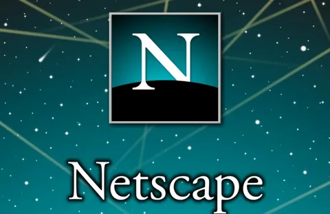
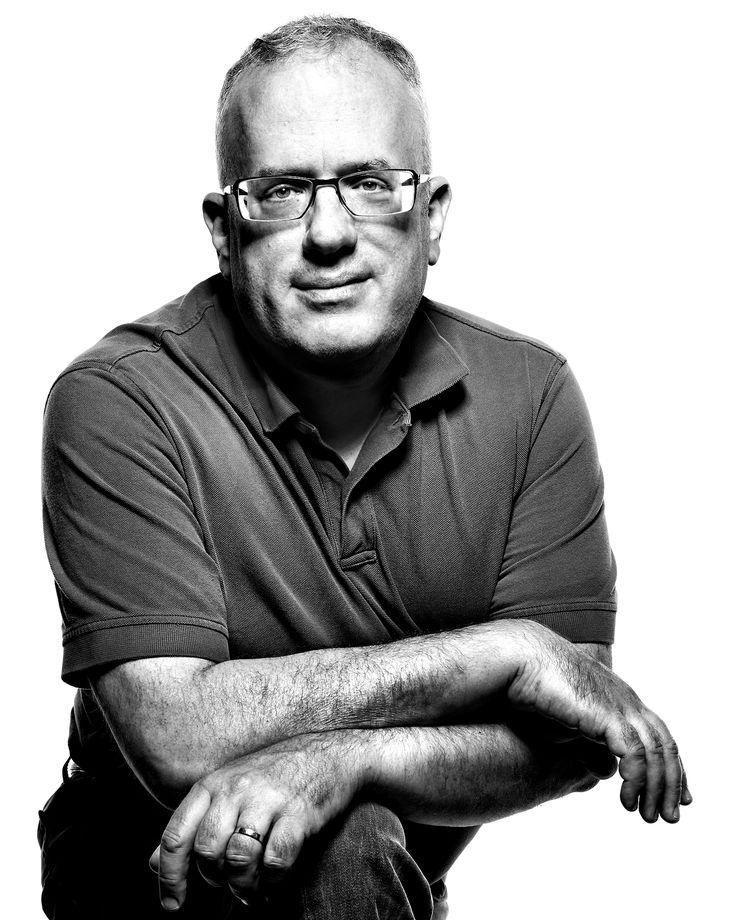
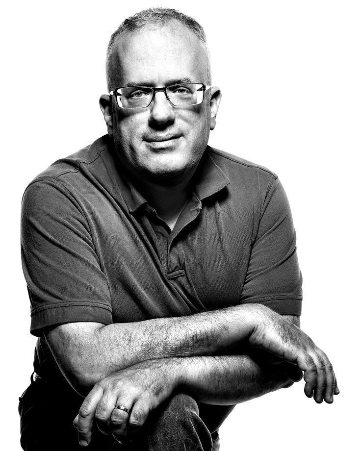

Биография и достижения Брендана Айка
Брендан Айк — американский программист и предприниматель, известный как создатель языка программирования JavaScript и сооснователь компании Mozilla. Он также является основателем и исполнительным директором Brave Software, создавшей браузер Brave. Айк получил образование в Иллинойском университете и начинал свою карьеру в Silicon Graphics, после чего работал в Netscape, где и создал JavaScript
Сам Брендан Айк так описывал свою миссию в одном из интервью:
Я Брендан Айк, изобретатель JavaScript и соучредитель Mozilla, и я делаю новый веб-браузер, ориентированный на приватность, под названием «Brave», чтобы ПОКОНЧИТЬ с капитализмом слежки
Основные этапы биографии
 

Образование и ранние годы: Брендан Айк получил степень магистра в Иллинойском университете в Урбана-Шампейн. Он начал свою карьеру в Silicon Graphics, работая над операционной системой и сетевым кодом.
Netscape и JavaScript: В 1995 году Айк перешёл в Netscape, где разработал язык программирования "Mocha", который позже был переименован в JavaScript.
Mozilla: В 1998 году он участвовал в основании mozilla.org и до 2014 года занимал пост технического директора в Mozilla Corporation.
Отставка из Mozilla: В марте 2014 года Айк был назначен генеральным директором Mozilla, но вскоре ушёл в отставку под давлением из-за поддержки им в 2008 году законопроекта, запрещающего однополые браки.
Brave Software: После ухода из Mozilla, в 2016 году, Айк основал Brave Software, разработав одноимённый браузер, фокусирующийся на приватности и блокировке рекламы.